Lá no começo
O dia em que te conheci
Eu nem imaginava que aquele dia ia mudar a minha vida inteira...
Tenho uma coisinha pra você, queridinha 💌
✦ Meu presente para o meu amor ✦
Cada dia ao seu lado é um presente que eu nunca imaginei
merecer. Você é especial demais pra mim...
Que você saiba o taaanto que eu te amo! 💙
💙 Nosso Amor em Números 💙
Isso dá 0 dias de nós dois... e contando 💙
💙 Nossa Linha do Tempo 💙
Eu nem imaginava que aquele dia ia mudar a minha vida inteira...
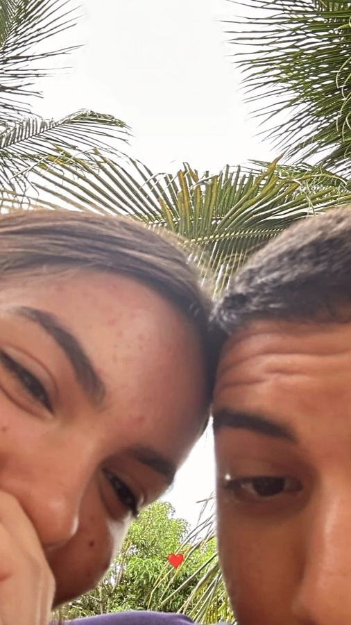
Os primeiros diasA primeira de muitas! Uma foto que marca o início da nossa história, rs.
Tu era caidinha por mim, e eu por você. O resto é história...
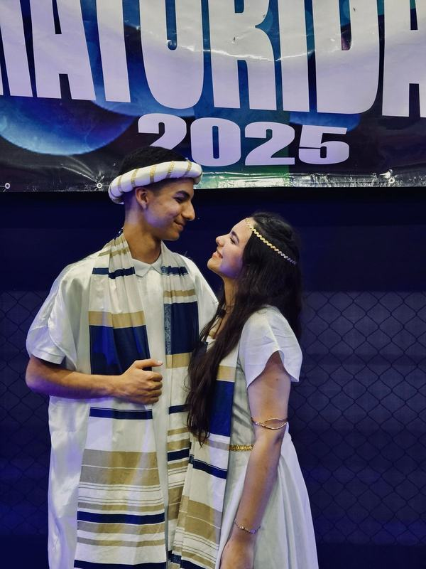
2025Juntos, pertinho de Deus e um do outro.
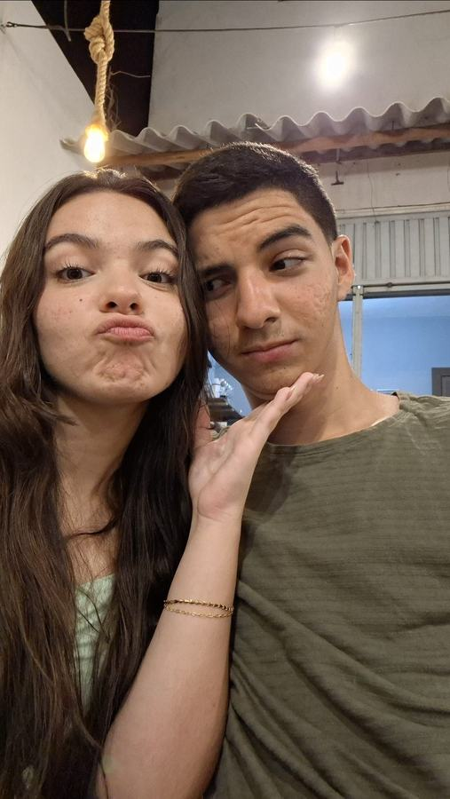
25 · 01 · 2026365 dias de você... e eu já queria mais 365 mil.
No Dia dos Namorados te dei uma página feita linha por linha com amor... e olha a gente aqui de novo!
Nossa família linda, nossos sonhos, nossas conquistas... com Deus na frente do barco, sempre juntos.
💙 Nossas Memórias 💙
toque numa foto pra ver de pertinho · dois toques pra curtir 💙
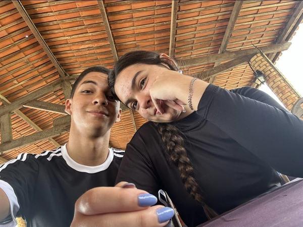
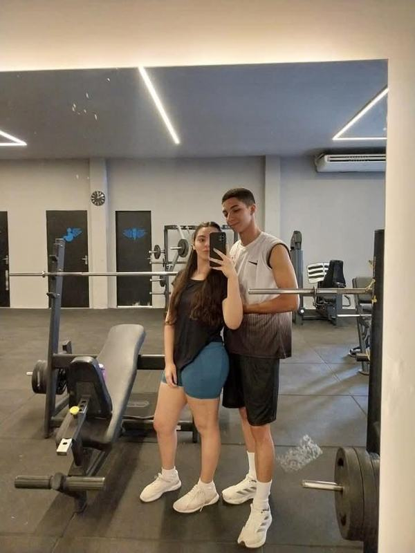
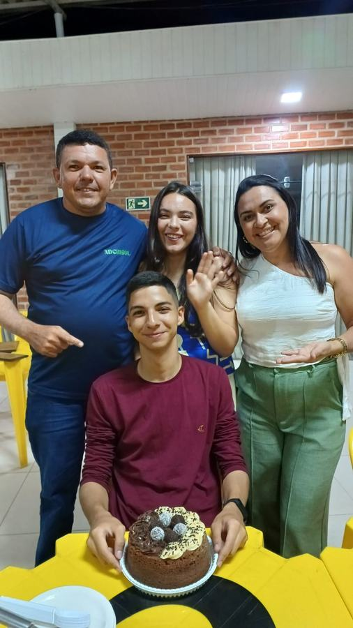
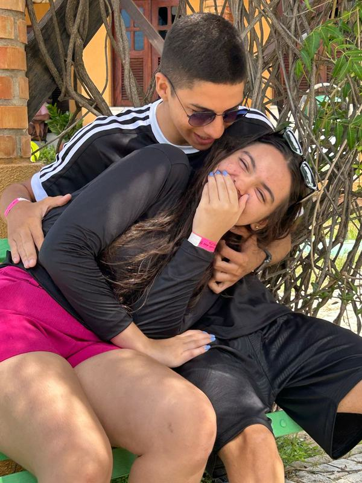
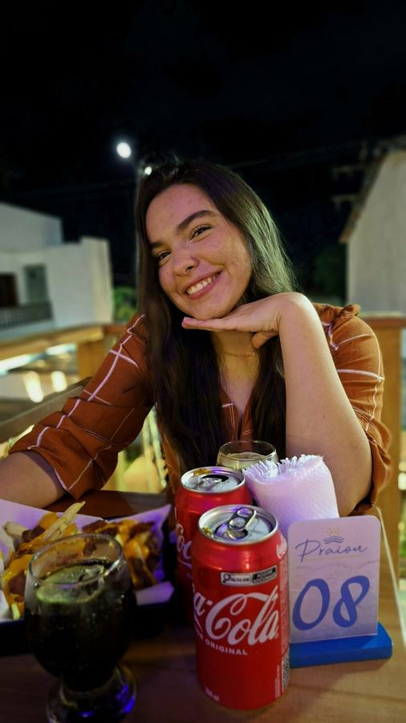
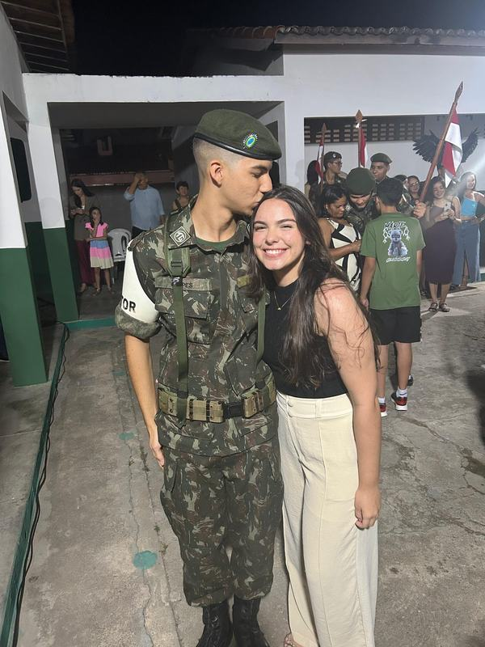
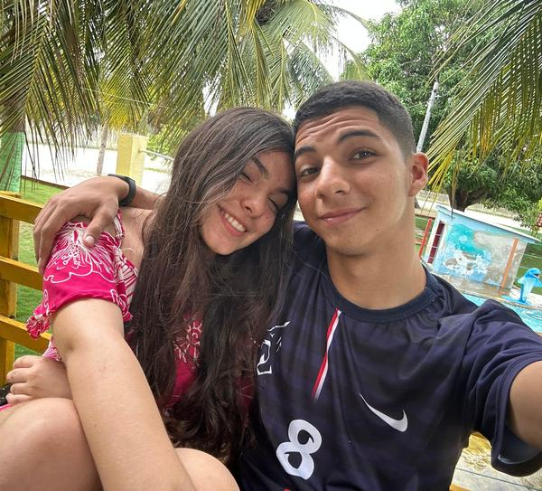
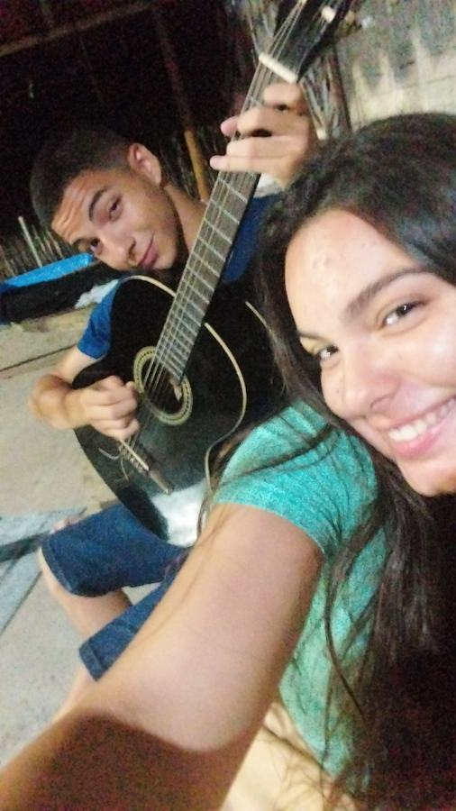
💙 Só alguns motivos 💙
toque na carta ou arraste pro lado 👉
💌 Palavras do Coração 💌
Sabe aquele dia em que a gente se conheceu? Eu não fazia ideia, mas ali estava começando a melhor parte da minha vida. Você chegou leve, sorrindo, e foi transformando tudo em alegria e risadas leves. O namoro foi só uma consequência, rs... tu era caidinha por mim, e eu por você (até hoje, viu?).
Eu não precisei de data especial pra te escrever isso. Hoje não é aniversário, não é Dia dos Namorados, não tem nada marcado no calendário... é só mais um dia comum. E é justamente por isso: é nos dias comuns que eu mais percebo o quanto eu te amo. Numa conversa boba, num abraço demorado, no jeito que você ri das minhas besteiras.
Cada sorriso seu ilumina meus dias difíceis e cansativos. Você é o meu porto seguro, a pessoa com quem eu quero dividir tudo: as conquistas, os perrengues, as risadas e até os silêncios. Não existem palavras que meçam todo o meu amor por você, mas eu vou passar a vida inteira tentando.
Obrigado por estar comigo nos momentos bons e nos ruins, pelo carinho, pela paciência e por acreditar em mim. Com Deus na frente do barco, a gente vai atrás de todos os nossos objetivos, vai formar nossa família linda e realizar cada um dos nossos sonhos. Juntos.
Então, se algum dia você duvidar, volta aqui e lê de novo: eu sou completamente apaixonado por vocêee!! Você merece o mundo inteiro, e eu vou te dar cada pedacinho que eu puder. Te amo hoje, amanhã e em todos os dias que ainda estão por vir, minha nenémzinha. 💙
🎁 Uma última coisinha 🎁
Se você chegou até aqui, é porque é curiosa do jeitinho que eu amo. 😄 Então aqui vai um segredo: eu penso em você bem mais do que eu admito, e toda vez que eu vejo uma foto nossa eu fico sorrindo igual bobo. Te amo infinitamente. 💙
👈 arraste para o lado 👉